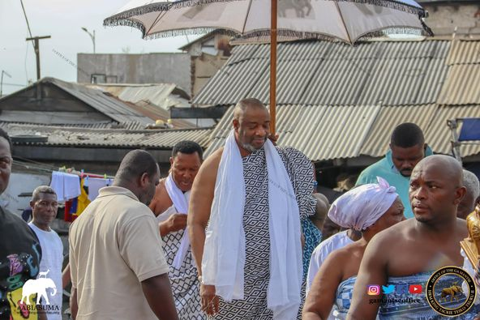

THE GA MANTSE
King Nii Tackie Teiko Tsuru II, also known as King Tackie Tawiah II, was a prominent Ghanaian traditional leader. He served as the Ga Mantse (Mantse means "king" or "chief" in the Ga language) of the Ga people in Accra, Ghana. The Ga people are one of the ethnic groups in Ghana, and the Ga Mantse holds a significant traditional leadership role within their community. King Nii Tackie Teiko Tsuru II plays important roles in preserving and promoting the cultural heritage and traditions of their respective communities. He also often have roles in local governance and community development.